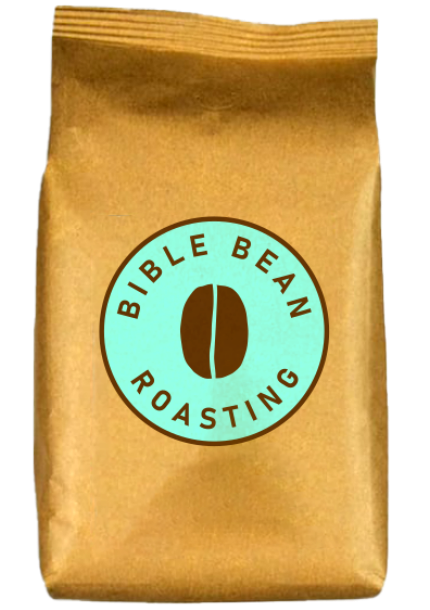

Arkansas Roasted Coffee
We proudly roast all of our beans in El Dorado, Arkansas, the heart of southern part of the state.
Bean Origins
We get are coffee beans shipped from all over the world, including Costa Rica, Vietnam, and Colombia.
Shipping and Pickup
We have free shipping for any location in the USA and also offer order pickup at our headquarters.
Our Values
As a Christian-founded company, we value the importance of blessing our customers with the highest value of coffee!
Also, thirty percent of all revenue goes towards Global and North American Missions!